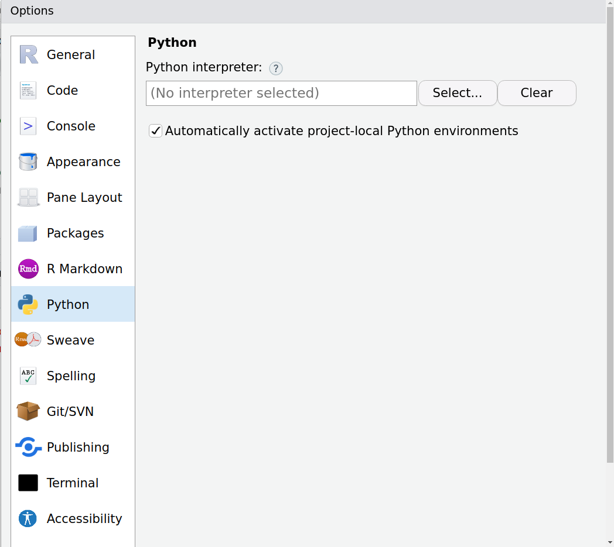
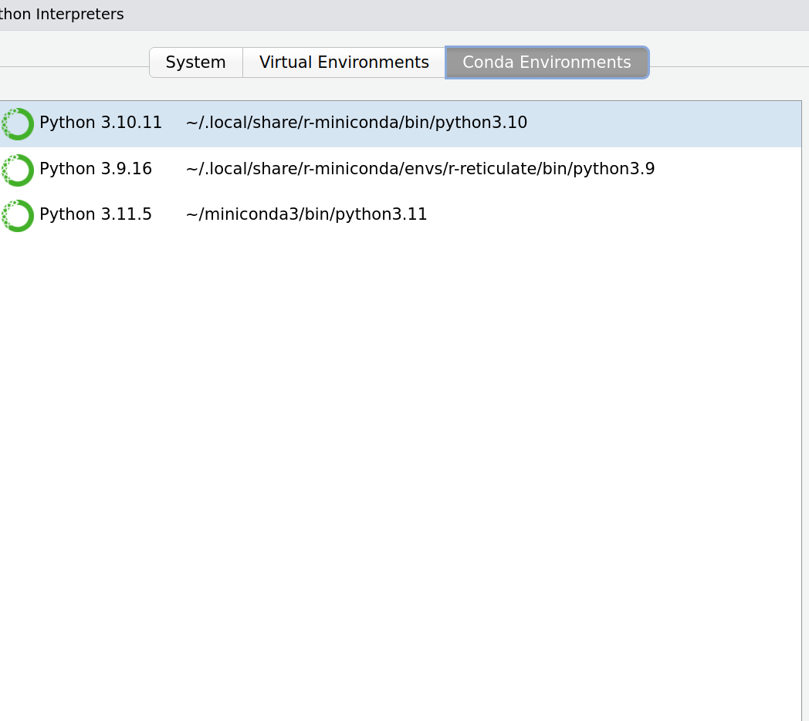

Troubleshooting the use of Python in R
Source:vignettes/articles/troubleshooting.Rmd
troubleshooting.RmdThis vignette provides guidance on troubleshooting issues related to Python module dependencies when using R.
Module not found error in Rstudio
You might encounter an error message similar to this:
Error in py_run_string_impl(code, local, convert) :
ModuleNotFoundError: No module named 'torch'
Run `reticulate::py_last_error()` for details.pangoling (as many other R packages) relies on
reticulate for Python functionality. Even if the package
installation seems successful, the issue may be that
reticulate is not correctly loading the correct Python
environment. By default, R should use the a conda environment
named r-reticulate when managing these configurations
automatically.
One can verify this by using py_config, this is the
output in a linux computer where the conda environment wasn’t
loaded:
#> python: /usr/local/bin/python
#> libpython: /usr/lib/python3.10/config-3.10-x86_64-linux-gnu/libpython3.10.so
#> pythonhome: //usr://usr
#> version: 3.10.12 (main, Jun 11 2023, 05:26:28) [GCC 11.4.0]
#> numpy: [NOT FOUND]
#>
#> NOTE: Python version was forced by RETICULATE_PYTHON_FALLBACKOne can anyways configure RStudio to load the correct conda
environment (r-reticulate) by default following these
steps:
In RStudio, navigate to the “Tools” menu.
Click on “Global Options” in the “Tools” menu.
Click on Python.

Click on Select…
Click on the Conda Enviornment tab.
Click on the r-reticulate path.

- Click on the Select button on the bottom.
The path that was selected should appear now when using
py_config():
py_config()
#> python: /home/runner/.virtualenvs/r-reticulate/bin/python
#> libpython: /opt/hostedtoolcache/Python/3.9.18/x64/lib/libpython3.9.so
#> pythonhome: /home/runner/.virtualenvs/r-reticulate:/home/runner/.virtualenvs/r-reticulate
#> version: 3.9.18 (main, Aug 28 2023, 08:38:32) [GCC 11.4.0]
#> numpy: /home/runner/.virtualenvs/r-reticulate/lib/python3.9/site-packages/numpy
#> numpy_version: 1.26.1
#>
#> NOTE: Python version was forced by RETICULATE_PYTHONHTTPSConnectionPool error
A causal_ or masked_ commands throws an
error that starts as follows:
Error in py_run_string_impl(code, local, convert) :
requests.exceptions.SSLError: HTTPSConnectionPool(host='huggingface.co', port=443): The first time a model is run, it will download some files that will
be available for subsequent runs. So if there is no internet connection
(or the huggingface website is down) during the first run, one will
experience this problem. Afterwards, it is possible to use
pangoling without an internet connection.